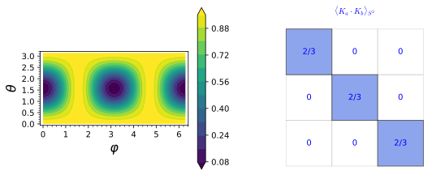
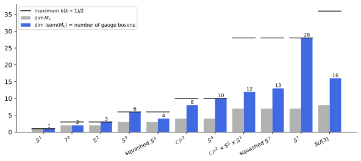

The reduced theory
The previous chapter showed that the isometries of the internal space become the gauge symmetries of the reduced theory. The decisive question is dynamical: does the higher-dimensional Einstein-Hilbert action, evaluated on the non-abelian ansatz, give Einstein gravity coupled to Yang-Mills theory, and are the solutions of the reduced theory solutions of the higher-dimensional one? For the circle of Part III both answers were yes. This chapter shows that for the sphere the first answer is still yes, with a gauge coupling fixed by the size of the sphere, but the second is no, and it locates the failure precisely in the way the Killing vectors’ lengths vary over the internal space.
The chapter has two sections. The first computes the reduced curvature scalar, which contains the Yang-Mills Lagrangian with the Killing inner products K_a\cdot K_b as point-dependent coefficients; averaging them over the sphere gives the gauge coupling, and their variation, a spin-2 harmonic of the sphere (Part I, Harmonic analysis on the sphere and on compact groups), is the consistency problem that Part V solves with symmetric fields. The second section looks beyond the sphere: group manifolds with their two commuting isometry groups, squashed spheres with broken symmetry, and the general rule that the number of gauge bosons is the dimension of the isometry group, bounded by the maximal symmetry of Flows and Killing vectors and realised on the coset spaces of Coset spaces. Every statement is followed by three examples and three exercises with hidden solutions; the curvature computations are exact SageManifolds calculations.
The reduced theory and the consistency problem
The curvature scalar of the non-abelian ansatz contains the Yang-Mills Lagrangian of the isometry group, with the inner products of the Killing vectors as its coefficient; integrated over the internal space these give the gauge coupling. But the ansatz is not a solution of the higher-dimensional vacuum equations: the same inner products vary over the sphere, and their variation is the consistency problem that coset space dimensional reduction addresses in Part V. This section states the reduced curvature scalar and explains the problem, following Duff (1994, sec. 5) and Overduin and Wesson (1997, sec. 4.4).
The reduced curvature scalar
For the circle the reduced curvature scalar was the four-dimensional one plus the Maxwell term weighted by the circle’s radius squared. The non-abelian formula replaces the radius squared by the matrix of Killing inner products and the abelian field strength by the Yang-Mills one, and adds the curvature of the internal space.
Definition 1 (Reduced curvature scalar) For the ansatz Equation 1 of Isometries and gauge fields with x-independent internal metric, \hat R = R + R_h - \tfrac14\,h_{mn}K^m_aK^n_b\,F^a_{\mu\nu}F^{b\,\mu\nu} = R - R_\gamma + \tfrac14\,\gamma_{mn}K^m_aK^n_b\,F^a_{\mu\nu}F^{b\,\mu\nu}, \qquad F^c_{\mu\nu} = \partial_\mu A^c_\nu - \partial_\nu A^c_\mu - f_{ab}{}^cA^a_\mu A^b_\nu , \tag{1} with R the curvature of g, R_h = -R_\gamma the curvature of the internal block h = -\gamma (R_\gamma = 2 for the unit sphere) and F^c the Yang-Mills field strength Equation 3 of Gauge theories of the gauge transformation Equation 4 of Isometries and gauge fields, whose structure constants are -f_{ab}{}^c, the opposite of the Killing brackets (for the sphere, +\epsilon_{abc}; Proposition 1); for the circle, K = 1, h = -\phi^2 and f = 0, this is Equation 7 of The Kaluza-Klein reduction without the scalar terms.
Veriphy. Pending.
Lean. Pending.
Sage. Pending.
The simplest test switches on one component of one gauge field, growing linearly in time. The field strength is then a constant electric field, and the curvature scalar shows the Killing inner product K_1\cdot K_1 directly.
Example 1 (One field strength component) g = \eta and A^1_x = ct: F^1_{tx} = c, F^2 = -2c^2, and \hat R = -2 - \tfrac12c^2\,K_1\cdot K_1 = -2 - \tfrac12c^2(1 - \sin^2\theta\cos^2\varphi), as SageManifolds finds in Exercise 1: the six-dimensional curvature scalar depends on the point of the sphere.
With several gauge fields the products A^aA^b enter the field strength through the commutator term. Its sign is not a matter of taste: the geometry produces one sign, and only that one reproduces the curvature scalar.
Example 2 (The commutator term) With three components A^1_x, A^2_t, A^3_x depending on (t, x), the product A^a_\mu A^b_\nu contributes to F^c through the commutator term -f_{ab}{}^cA^a_\mu A^b_\nu = +\epsilon_{abc}A^a_\mu A^b_\nu, and Equation 1 holds only with this sign, and fails with the opposite one: the field strength that the geometry produces is the non-abelian one, with the same sign flip relative to the Killing brackets as the gauge transformation Equation 4 of Isometries and gauge fields.
Veriphy. Pending.
Lean. Pending.
Sage. sage/nonabelian_reduction.sage tests both signs.
A flat internal space has no curvature and constant Killing inner products. Its reduction is a set of Maxwell fields with a constant coupling matrix, and none of the difficulties of the sphere arise.
Example 3 (Flat internal space) For T^k, R_h = 0, K^m_a = \delta^m_a and \gamma_{mn}K^m_aK^n_b = \gamma_{ab} constant: \hat R = R + \tfrac14\gamma_{ab}F^aF^b, k Maxwell fields with the internal metric as coupling matrix (the sign of the Einstein-Hilbert action makes it -\tfrac14\gamma_{ab}F^aF^b in the Lagrangian, Equation 2), and the ansatz solves the vacuum equations exactly when g and A do (Duff 1994, sec. 4).

figures/killing_inner_products.sage.
Interactive figure (drag to rotate or zoom); the static version is above.
The first exercise is the SageManifolds computation behind Example 1. It builds the six-dimensional metric, computes its curvature scalar exactly and averages it over the sphere.
Exercise 1 (The curvature scalar for one gauge field) Compute \hat R with SageManifolds for A^1_x = ct and average it over the sphere.
th, ph = var("th ph")
K1 = vector([-sin(ph), -cot(th) * cos(ph)]); h = diagonal_matrix(SR, [1, sin(th)^2])
M = Manifold(6, "M", structure="Lorentzian"); X = M.chart("t x y z th6 ph6"); t, x, y, z, th6, ph6 = X[:]
c = var("c")
K1s = K1.subs(th=th6, ph=ph6); hs = h.subs(th=th6)
B = [[0, K1s[m] * c * t, 0, 0] for m in range(2)]
eta = [1, -1, -1, -1]
g = M.metric("g") # internal block h = -gamma
for mu in range(4):
for nu in range(mu, 4): g[mu, nu] = (eta[mu] if mu == nu else 0) - sum(hs[m, n] * B[m][mu] * B[n][nu] for m in range(2) for n in range(2))
for m in range(2): g[mu, 4 + m] = -sum(hs[m, n] * B[n][mu] for n in range(2))
for m in range(2):
for n in range(m, 2): g[4 + m, 4 + n] = -hs[m, n]
R6 = g.ricci_scalar().expr().simplify_full()
print("R_6 =", R6)
KK11 = (K1 * h * K1).simplify_full().subs(th=th6, ph=ph6)
print("[PASS] R_6 = -2 - (c^2/2) K_1 . K_1 (flat spacetime, R_h = -R_{S^2} = -2, F^2 = -2 c^2):", bool((R6 - (-2 - c^2 / 2 * KK11)).simplify_full() == 0))
avg = integrate(integrate(R6 * sin(th6), th6, 0, pi), ph6, 0, 2 * pi) / (4 * pi)
print("average of R_6 over the sphere:", avg.simplify_full())
print("[PASS] the average is -2 - c^2/3, i.e. -2 + (1/4)(2/3) F^2 with F^2 = -2 c^2:", bool((avg - (-2 - c^2 / 3)).simplify_full() == 0))Output:
R_6 = 1/2*c^2*cos(ph6)^2*sin(th6)^2 - 1/2*c^2 - 2
[PASS] R_6 = -2 - (c^2/2) K_1 . K_1 (flat spacetime, R_h = -R_{S^2} = -2, F^2 = -2 c^2): True
average of R_6 over the sphere: -1/3*c^2 - 2
[PASS] the average is -2 - c^2/3, i.e. -2 + (1/4)(2/3) F^2 with F^2 = -2 c^2: TrueChoosing the gauge field along a different Killing vector changes where on the sphere the curvature is largest. The second exercise takes the rotation about the polar axis, whose orbits are the circles of latitude.
Exercise 2 (A gauge field along K_3) Compute \hat R for A^3_x = ct, compare with Equation 1, and find where on the sphere |\hat R| is largest. Is the average different from that of Exercise 1?
K_3\cdot K_3 = \sin^2\theta, the squared radius of the circle of latitude, so \hat R = -2 - \tfrac12c^2\sin^2\theta, largest in magnitude on the equator and equal to -2 at the poles, the fixed points of K_3. The average is -2 - \tfrac12c^2\cdot \tfrac23 = -2 - \tfrac13c^2, the same as for A^1, as the rotational symmetry of the sphere requires:
M = Manifold(6, "M", structure="Lorentzian"); X = M.chart("t x y z th ph"); t, x, y, z, th, ph = X[:]
c = var("c")
gam = diagonal_matrix(SR, [1, sin(th)^2])
B = [[0, 0, 0, 0], [0, c * t, 0, 0]] # B^m_mu = K^m_3 A^3_mu with K_3 = d_ph
eta = [1, -1, -1, -1]
g = M.metric("g")
for mu in range(4):
for nu in range(mu, 4): g[mu, nu] = (eta[mu] if mu == nu else 0) - sum(gam[m, n] * B[m][mu] * B[n][nu] for m in range(2) for n in range(2))
for m in range(2): g[mu, 4 + m] = -sum(gam[m, n] * B[n][mu] for n in range(2))
for m in range(2):
for n in range(m, 2): g[4 + m, 4 + n] = -gam[m, n]
R6 = g.ricci_scalar().expr().simplify_full()
print("R_6 =", R6)
print("[PASS] R_6 = -2 - (c^2/2) sin^2 th:", bool((R6 - (-2 - c^2 / 2 * sin(th)^2)).simplify_full() == 0))
avg = integrate(integrate(R6 * sin(th), th, 0, pi), ph, 0, 2 * pi) / (4 * pi)
print("[PASS] its average over the sphere is -2 - c^2/3, the same as for A^1_x = c t:", bool((avg + 2 + c^2 / 3).simplify_full() == 0))Output:
R_6 = -1/2*c^2*sin(th)^2 - 2
[PASS] R_6 = -2 - (c^2/2) sin^2 th: True
[PASS] its average over the sphere is -2 - c^2/3, the same as for A^1_x = c t: TrueA constant non-abelian gauge field has no derivatives but can still have a field strength. The third exercise shows that the higher-dimensional curvature sees this purely commutator field strength.
Exercise 3 (A constant non-abelian field) For constant A^1_x = c_1, A^2_y = c_2 compute F^c_{\mu\nu} and F^a_{\mu\nu}F^{a\,\mu\nu}, predict \hat R from Equation 1, and check the prediction with SageManifolds.
Only the commutator term contributes: F^3_{xy} = \epsilon_{123}A^1_xA^2_y = c_1c_2, and with \eta^{xx}\eta^{yy} = 1, F^3_{\mu\nu}F^{3\,\mu\nu} = 2c_1^2c_2^2, a magnetic field with positive invariant. Then \hat R = -2 + \tfrac14\cdot 2c_1^2c_2^2\, K_3\cdot K_3 = -2 + \tfrac12c_1^2c_2^2\sin^2\theta. An abelian constant potential would give F = 0 and \hat R = -2:
M = Manifold(6, "M", structure="Lorentzian"); X = M.chart("t x y z th ph"); t, x, y, z, th, ph = X[:]
c1, c2 = var("c1 c2")
K = [vector([-sin(ph), -cot(th) * cos(ph)]), vector([cos(ph), -cot(th) * sin(ph)]), vector([0, 1])]
gam = diagonal_matrix(SR, [1, sin(th)^2])
A = [[0, c1, 0, 0], [0, 0, c2, 0], [0, 0, 0, 0]] # A^a_mu, mu = t, x, y, z
B = [[sum(K[a][m] * A[a][mu] for a in range(3)) for mu in range(4)] for m in range(2)]
eta = [1, -1, -1, -1]
g = M.metric("g")
for mu in range(4):
for nu in range(mu, 4): g[mu, nu] = (eta[mu] if mu == nu else 0) - sum(gam[m, n] * B[m][mu] * B[n][nu] for m in range(2) for n in range(2))
for m in range(2): g[mu, 4 + m] = -sum(gam[m, n] * B[n][mu] for n in range(2))
for m in range(2):
for n in range(m, 2): g[4 + m, 4 + n] = -gam[m, n]
R6 = g.ricci_scalar().expr().simplify_full()
print("R_6 =", R6)
print("[PASS] R_6 = -2 + (1/2) c1^2 c2^2 sin^2 th:", bool((R6 - (-2 + c1^2 * c2^2 / 2 * sin(th)^2)).simplify_full() == 0))Output:
R_6 = 1/2*c1^2*c2^2*sin(th)^2 - 2
[PASS] R_6 = -2 + (1/2) c1^2 c2^2 sin^2 th: TrueThe proposition states the reduced curvature scalar on explicit polynomial fields, including the sign of the commutator term. That sign is fixed by the structure constants of the gauge algebra, which are opposite to those of the Killing brackets.
Proposition 1 (The curvature scalar of the sphere ansatz) For flat spacetime and gauge fields A^1_x, A^2_t, A^3_x given by polynomials in (t, x), Equation 1 holds exactly with the commutator term +\epsilon_{abc}A^a_\mu A^b_\nu (the gauge structure constants -f_{ab}{}^c, opposite to the Killing brackets f_{ab}{}^c = -\epsilon_{abc}) and fails with the opposite sign; \hat R depends on the point of the sphere.
Veriphy. Pending.
Lean. Pending.
Sage. Checked by exact computation with SageManifolds in sage/nonabelian_reduction.sage; the single-component case A^1_x = ct in figures/killing_inner_products.sage and Exercise 1. The general derivation is at level sage, as design D5 prescribes.
The sign test works because derivative and commutator terms of the field strength interfere. A configuration with a time-dependent field and two constant ones shows the interference in a single component.
Example 4 (Interference of the two terms) For A^3_x = ct, A^1_t = a, A^2_x = b: F^3_{tx} = c + s\,ab and F^2_{tx} = -s\,act, where s = +1 is the sign of the geometry and s = -1 that of the Killing brackets. The two choices give different (F^3)^2 = (c \pm ab)^2, and only s = +1 reproduces the curvature scalar (Exercise 4).
Averaging over the sphere removes the dependence on the point. The averaged curvature scalar is what enters the reduced action, and the averages of the Killing inner products make it the Yang-Mills Lagrangian.
Example 5 (The averaged curvature scalar) With \langle K_a\cdot K_b\rangle = \tfrac23\delta_{ab} (Proposition 2), the average of Equation 1 over the unit sphere is \langle\hat R\rangle = R - 2 + \tfrac16F^a_{\mu\nu}F^{a\,\mu\nu}; for A^1_x = ct this is -2 - \tfrac13c^2, the average found in Exercise 1.
Testing a curvature formula on explicit fields follows a fixed pattern. Writing it out once shows what such a computation establishes and what it leaves open.
Example 6 (Computing \hat R on explicit fields) From explicit g, A^a_\mu and the Killing vectors one builds the six-dimensional metric Equation 1 of Isometries and gauge fields, computes its Christoffel symbols, its Ricci tensor and \hat R symbolically, and compares the result with the right-hand side of Equation 1 by simplifying the difference to zero. The comparison is exact but covers the chosen fields only, which is why the fields are chosen to make every term, including the commutator, non-zero.
Veriphy. Pending.
Lean. Pending.
Sage. This is how sage/nonabelian_reduction.sage checks Proposition 1 with SageManifolds; the general formula is therefore at level sage.
The first exercise performs the interference test of Example 4. SageManifolds computes \hat R once, and the two candidate field strengths are compared with it.
Exercise 4 (The sign by interference) For A^3_x = ct, A^1_t = a, A^2_x = b, compute \hat R and compare with -2 - \tfrac12K_a\cdot K_b\,F^a_{tx}F^b_{tx} for both signs of the commutator term.
With F^aF^a = 2F^a_{tx}F^{a\,tx} = -2F^a_{tx}F^a_{tx} the prediction is -2 - \tfrac12K_a\cdot K_bF^a_{tx}F^b_{tx}. Only the sign of the gauge transformation, F^3_{tx} = c + ab, matches:
M = Manifold(6, "M", structure="Lorentzian"); X = M.chart("t x y z th ph"); t, x, y, z, th, ph = X[:]
a, b, c = var("a b c")
K = [vector([-sin(ph), -cot(th) * cos(ph)]), vector([cos(ph), -cot(th) * sin(ph)]), vector([0, 1])]
gam = diagonal_matrix(SR, [1, sin(th)^2])
A = [[a, 0, 0, 0], [0, b, 0, 0], [0, c * t, 0, 0]]
B = [[sum(K[i][m] * A[i][mu] for i in range(3)) for mu in range(4)] for m in range(2)]
eta = [1, -1, -1, -1]
g = M.metric("g")
for mu in range(4):
for nu in range(mu, 4): g[mu, nu] = (eta[mu] if mu == nu else 0) - sum(gam[m, n] * B[m][mu] * B[n][nu] for m in range(2) for n in range(2))
for m in range(2): g[mu, 4 + m] = -sum(gam[m, n] * B[n][mu] for n in range(2))
for m in range(2):
for n in range(m, 2): g[4 + m, 4 + n] = -gam[m, n]
R6 = g.ricci_scalar().expr().simplify_full()
KK = matrix(SR, 3, 3, lambda i, j: K[i] * gam * K[j])
def lc(i, j, k): return Permutation([i + 1, j + 1, k + 1]).sign() if len({i, j, k}) == 3 else 0
tt, xx = var("tt xx")
def Ftx(s): # F^c_{tx} with commutator sign s
Af = [[A[i][mu].subs(t=tt) for mu in range(2)] for i in range(3)]
return [diff(Af[k][1], tt) - diff(Af[k][0], xx) + s * sum(lc(i, j, k) * Af[i][0] * Af[j][1] for i in range(3) for j in range(3)) for k in range(3)]
for s in [1, -1]:
F = vector([f.subs(tt=t) for f in Ftx(s)])
print("s = %+d: F_tx =" % s, F)
pred = -2 - F * KK * F / 2
print("[PASS] R_6 = -2 - (1/2) K_a . K_b F^a_tx F^b_tx with s = %+d:" % s if s == 1 else "R_6 = -2 - (1/2) K_a . K_b F^a_tx F^b_tx with s = %+d (expected False):" % s, bool((R6 - pred).simplify_full() == 0))Output:
s = +1: F_tx = (0, -a*c*t, a*b + c)
[PASS] R_6 = -2 - (1/2) K_a . K_b F^a_tx F^b_tx with s = +1: True
s = -1: F_tx = (0, a*c*t, -a*b + c)
R_6 = -2 - (1/2) K_a . K_b F^a_tx F^b_tx with s = -1 (expected False): FalseThe averaged scalar of Example 5 holds for any field strength. The second exercise derives it in general from the pointwise formula.
Exercise 5 (The average in general) Show that the average of Equation 1 over the unit sphere is R - 2 + \tfrac16F^a_{\mu\nu}F^{a\,\mu\nu} for any g and A that do not depend on y, and evaluate it for the field of Exercise 3.
R, R_\gamma = 2 and F^aF^b do not depend on the point of the sphere, so averaging acts only on K_a\cdot K_b, giving \tfrac14\cdot\tfrac23\delta_{ab}F^aF^b = \tfrac16F^aF^a. For the constant field, F^aF^a = 2c_1^2c_2^2 and \langle\hat R\rangle = -2 + \tfrac13c_1^2c_2^2, which is also the average of -2 + \tfrac12c_1^2c_2^2\sin^2\theta since \langle\sin^2\theta\rangle = \tfrac23.
The non-abelian formula must contain the circle formula of Part III. The third exercise makes the comparison and notes what the frozen internal metric removes.
Exercise 6 (The circle limit of the curvature scalar) Set k = 1, \gamma = \phi^2 constant, K = \partial_y and f = 0 in Equation 1, and compare with Equation 7 of The Kaluza-Klein reduction.
R_\gamma = 0 for a circle, \gamma_{mn}K^mK^n = \phi^2 and F = dA, so \hat R = R + \tfrac14\phi^2F_{\mu\nu}F^{\mu\nu}, which is Equation 7 of The Kaluza-Klein reduction with \Box\phi = 0. The term -\tfrac2\phi\Box\phi is absent because the internal metric is frozen; it would return with an x-dependent internal metric, the scalars of Part V.
The Killing inner products
The coefficient of the Yang-Mills term is not a constant but a function on the internal space. The definition names it and states its form on the sphere, where it has a simple geometric meaning.
Definition 2 (Killing inner products) The Killing inner products are the functions K_a\cdot K_b = \gamma_{mn}K^m_aK^n_b on the internal space, taken with the positive round metric; on the unit sphere K_a\cdot K_b = \delta_{ab} - n_an_b with \vec n the unit position vector, of rank two (the combination n^aK_a vanishes at \vec n), and their average over the sphere is \langle K_a\cdot K_b\rangle = \tfrac23\delta_{ab} (Proposition 2).
Veriphy. Pending.
Lean. Pending.
Sage. Pending.
The formula \delta_{ab} - n_an_b is the matrix of the orthogonal projection onto the tangent plane. The example reads it off from the rotation velocities of the three Killing vectors.
Example 7 (Geometry of \delta_{ab} - n_an_b) K_a generates the rotation about the a-axis, whose velocity at \vec n is \vec e_a \times \vec n, of squared length 1 - n_a^2: the inner product is the projector onto the tangent plane, and it vanishes at the two fixed points of the rotation (Figure 1).
Integrated over the sphere, the inner products give the coefficient of the Yang-Mills term in the reduced action. This coefficient is the inverse square of the gauge coupling, which is therefore fixed by geometry.
Example 8 (The gauge coupling) Integrating \hat R over the sphere with \int d^2y\sqrt\gamma = 4\pi gives \int\sqrt\gamma\,K_a\cdot K_b = \tfrac{8\pi}{3} \delta_{ab}: with the overall -\tfrac{1}{2\hat\kappa^2} of the action, the Yang-Mills term of the reduced action is -\tfrac14\cdot\tfrac{8\pi}{3}\cdot\tfrac{1}{2\hat\kappa^2} F^aF^a, and the gauge coupling is fixed by the radius of the sphere and the higher-dimensional Newton constant, g^2 \propto \hat\kappa^2/R^4 for a sphere of radius R (Exercise 19).
On a group manifold half of the Killing vectors behave differently. The left-invariant fields have constant inner products, and with them the difficulty of the sphere disappears.
Example 9 (Group manifolds) On a group manifold with bi-invariant metric the left-invariant Killing vectors have constant inner products, \gamma_{mn}K^m_aK^n_b = \delta_{ab}: there the coefficient of F^2 is constant, the ansatz is consistent, and the reduction is the DeWitt reduction of Part VI.
The first exercise extracts the invariant information from the matrix K_a\cdot K_b. Its trace and rank do not depend on the point, even though the entries do.
Exercise 7 (Trace and rank) Show that \sum_aK_a\cdot K_a = 2 at every point of the unit sphere, that the matrix K_a\cdot K_b has eigenvalues 1, 1, 0, and identify the eigenvectors.
The trace is \sum_a(1 - n_a^2) = 3 - 1 = 2, the dimension of the sphere. The projector P = 1 - \vec n\vec n^T satisfies P\vec n = 0 and P\vec v = \vec v for \vec v \perp \vec n, so its eigenvalues are 0 (eigenvector \vec n) and 1 (twice, the tangent plane). The zero eigenvector is the combination n^aK_a = 0 of Definition 2, the rotation about the axis through the point itself.
The same structure appears on every round sphere, with the rotation fields of \mathbb{R}^{n+1} as Killing vectors. The second exercise computes their average inner products by integration.
Exercise 8 (Higher spheres) On S^n \subset \mathbb{R}^{n+1} the Killing vectors are K_{ij} = x_i\partial_j - x_j\partial_i. Show |K_{ij}|^2 = x_i^2 + x_j^2 and compute its average over S^n for n = 2, 3, 4. What is the general formula?
K_{ij} has components x_i along \partial_j and -x_j along \partial_i, so its squared length is x_i^2 + x_j^2. By symmetry \langle x_i^2\rangle is the same for all n + 1 coordinates, and they add up to 1, so \langle x_i^2\rangle = \tfrac{1}{n + 1} and \langle|K_{ij}|^2\rangle = \tfrac{2}{n + 1}: \tfrac23, \tfrac12, \tfrac25:
def sphere_average(n, f):
a = [var("a%d" % i) for i in range(n)] # a_0, ..., a_{n-2} in (0, pi), a_{n-1} in (0, 2 pi)
x = [prod(sin(a[j]) for j in range(i)) * cos(a[i]) for i in range(n)] + [prod(sin(a[j]) for j in range(n))]
vol = prod(sin(a[j])^(n - 1 - j) for j in range(n - 1)) # the volume density of the unit S^n
num = f(x) * vol; den = vol
for j in range(n - 1):
num = integrate(num, a[j], 0, pi); den = integrate(den, a[j], 0, pi)
num = integrate(num, a[n - 1], 0, 2 * pi); den = integrate(den, a[n - 1], 0, 2 * pi)
return (num / den).simplify_full(), x
for n in [2, 3, 4]:
v, x = sphere_average(n, lambda x: x[0]^2 + x[1]^2)
print("n = %d: <|K_01|^2> = %s, and x.x = %s" % (n, v, sum(xi^2 for xi in x).simplify_full()))
print("[PASS] on S^%d the average of |K_ij|^2 is 2/(n+1) = %s:" % (n, 2 / (n + 1)), bool(v == 2 / (n + 1)))Output:
n = 2: <|K_01|^2> = 2/3, and x.x = 1
[PASS] on S^2 the average of |K_ij|^2 is 2/(n+1) = 2/3: True
n = 3: <|K_01|^2> = 1/2, and x.x = 1
[PASS] on S^3 the average of |K_ij|^2 is 2/(n+1) = 1/2: True
n = 4: <|K_01|^2> = 2/5, and x.x = 1
[PASS] on S^4 the average of |K_ij|^2 is 2/(n+1) = 2/5: TrueEvery combination v^aK_a of the Killing vectors vanishes somewhere on the sphere. The third exercise finds the zeros and relates them to a topological fact about the sphere.
Exercise 9 (Zeros of the Killing vectors) Show that v^aK_a, for a non-zero \vec v \in \mathbb{R}^3, vanishes exactly at \vec n = \pm\vec v/|\vec v|, and compute |v^aK_a|^2. Why must every vector field on S^2 vanish somewhere?
v^aK_a is the rotation field \vec v \times \vec n (Exercise 2 of Isometries and gauge fields), which vanishes when \vec n is parallel to \vec v, and |v^aK_a|^2 = v^av^b(\delta_{ab} - n_an_b) = |\vec v|^2 - (\vec v\cdot\vec n)^2. That every continuous tangent field on S^2 has a zero is the hairy ball theorem: the Euler characteristic of the sphere is 2 \neq 0. Consequently no Killing vector of the sphere has constant length, which is the root of the consistency problem below.
The pointwise formula and the average are the two facts about the inner products that the reduction uses. The proposition collects them.
Proposition 2 (The Killing inner products on the sphere) K_a\cdot K_b = \delta_{ab} - n_an_b pointwise and \langle K_a\cdot K_b\rangle = \tfrac23\delta_{ab} on average.
Veriphy. Pending.
Lean. Pending.
Sage. Checked by exact computation in figures/s2_gauge_fields.sage and figures/killing_inner_products.sage.
That the average is proportional to \delta_{ab} is no accident. Rotations permute the Killing vectors among themselves, and a matrix invariant under all rotations must be a multiple of the identity.
Example 10 (Proportional to the identity by symmetry) A rotation \mathcal{R} of the sphere maps K_a to \mathcal{R}_{ab}K_b and preserves the round measure, so the averaged matrix M_{ab} = \langle K_a\cdot K_b\rangle satisfies \mathcal{R}M\mathcal{R}^T = M for all \mathcal{R} \in SO(3); since the vector representation is irreducible, M = \lambda\cdot 1 by Schur’s lemma (Exercise 12).
The constant \lambda follows from the trace. The trace is the same at every point, so its average is known without any integration.
Example 11 (The constant from the trace) \operatorname{tr}M = \langle\sum_aK_a\cdot K_a\rangle = 2 (Exercise 7), and \operatorname{tr}(\lambda\cdot 1) = 3\lambda, so \lambda = \tfrac23. On S^n the same argument with \tfrac{n(n+1)}{2} Killing vectors gives \lambda = \tfrac{2}{n + 1} (Exercise 8).
The average has rank three while every pointwise matrix has rank two. Averaging thus produces a coupling for all three gauge fields, even though at each point one of them is invisible.
Example 12 (Rank two pointwise, rank three on average) At each point K_a\cdot K_b annihilates \vec n, so one combination of the gauge fields drops out of \hat R there (Exercise 8 of Isometries and gauge fields); the average \tfrac23\delta_{ab} is invertible, and every gauge field acquires a kinetic term in the reduced action. The pointwise degeneracy is the local shadow of the hairy ball theorem (Exercise 9).
The first exercise computes the moments of the coordinates on the sphere that enter all these averages. The fourth moments will also be needed for the variance.
Exercise 10 (Moments on the sphere) Compute \langle n_an_b\rangle and \langle n_an_bn_cn_d\rangle over the unit sphere, and deduce \langle K_a\cdot K_b\rangle.
By symmetry \langle n_an_b\rangle = \lambda\delta_{ab} with 3\lambda = \langle|\vec n|^2\rangle = 1, and \langle n_an_bn_cn_d\rangle = \mu(\delta_{ab}\delta_{cd} + \delta_{ac}\delta_{bd} + \delta_{ad}\delta_{bc}) with \mu = \langle n_3^4\rangle/3 = \tfrac15/3 = \tfrac{1}{15}. Then \langle K_a\cdot K_b\rangle = \delta_{ab} - \tfrac13\delta_{ab} = \tfrac23\delta_{ab}:
th, ph = var("th ph")
n = vector([sin(th) * cos(ph), sin(th) * sin(ph), cos(th)])
avg = lambda f: integrate(integrate(f * sin(th), th, 0, pi), ph, 0, 2 * pi) / (4 * pi)
d = lambda a, b: 1 if a == b else 0
M2 = matrix(QQ, 3, 3, lambda a, b: avg(n[a] * n[b]))
print("<n_a n_b> =", M2.list())
print("[PASS] <n_a n_b> = delta_ab / 3:", M2 == identity_matrix(QQ, 3) / 3)
ok = all(bool(avg(n[a] * n[b] * n[c] * n[e]) == (d(a, b) * d(c, e) + d(a, c) * d(b, e) + d(a, e) * d(b, c)) / 15) for a in range(3) for b in range(3) for c in range(3) for e in range(3))
print("[PASS] <n_a n_b n_c n_d> = (delta delta + delta delta + delta delta) / 15:", ok)
print("[PASS] <K_a . K_b> = delta_ab - <n_a n_b> = (2/3) delta_ab:", identity_matrix(QQ, 3) - M2 == 2 / 3 * identity_matrix(QQ, 3))Output:
<n_a n_b> = [1/3, 0, 0, 0, 1/3, 0, 0, 0, 1/3]
[PASS] <n_a n_b> = delta_ab / 3: True
[PASS] <n_a n_b n_c n_d> = (delta delta + delta delta + delta delta) / 15: True
[PASS] <K_a . K_b> = delta_ab - <n_a n_b> = (2/3) delta_ab: TrueThe average hides how much the coefficient varies over the sphere. The second exercise measures the variation by the variance, which will turn out to be the strength of the inconsistency.
Exercise 11 (How much the coupling varies) Compute the variance of K_1\cdot K_1 over the unit sphere, and the mean and mean square of K_1\cdot K_2.
\langle(1 - n_1^2)^2\rangle = 1 - \tfrac23 + \tfrac15 = \tfrac{8}{15}, so the variance is \tfrac{8}{15} - \tfrac49 = \tfrac{4}{45}, a relative spread \sqrt{4/45}/\tfrac23 = 1/\sqrt5 \approx 0.45; \langle n_1n_2\rangle = 0 and \langle n_1^2n_2^2\rangle = \tfrac{1}{15}:
th, ph = var("th ph")
n = vector([sin(th) * cos(ph), sin(th) * sin(ph), cos(th)])
avg = lambda f: integrate(integrate(f * sin(th), th, 0, pi), ph, 0, 2 * pi) / (4 * pi)
K11 = 1 - n[0]^2; K12 = -n[0] * n[1]
var11 = avg(K11^2) - avg(K11)^2
print("<K_1.K_1> =", avg(K11), " variance =", var11, " relative spread =", sqrt(var11) / avg(K11))
print("[PASS] the variance of K_1 . K_1 over the sphere is 4/45:", bool(var11 == 4 / 45))
print("[PASS] <K_1 . K_2> = 0 and <(K_1 . K_2)^2> = 1/15:", bool(avg(K12) == 0) and bool(avg(K12^2) == 1 / 15))Output:
<K_1.K_1> = 2/3 variance = 4/45 relative spread = sqrt(1/5)
[PASS] the variance of K_1 . K_1 over the sphere is 4/45: True
[PASS] <K_1 . K_2> = 0 and <(K_1 . K_2)^2> = 1/15: TrueThe symmetry argument of Example 10 deserves a proof. The third exercise supplies it, using only the invariance of the round measure.
Exercise 12 (The symmetry argument) Show that under a rotation \vec n \mapsto \mathcal{R}\vec n the functions K_a\cdot K_b transform as (K_a\cdot K_b)(\mathcal{R}\vec n) = \mathcal{R}_{ac}\mathcal{R}_{bd}(K_c\cdot K_d)(\vec n), and conclude that \langle K_a\cdot K_b\rangle = \lambda\delta_{ab}.
\delta_{ab} - (\mathcal{R}\vec n)_a(\mathcal{R}\vec n)_b = \mathcal{R}_{ac}\mathcal{R}_{bd}(\delta_{cd} - n_cn_d) because \mathcal{R}\mathcal{R}^T = 1. Averaging with the rotation-invariant measure gives M = \mathcal{R}M\mathcal{R}^T for every rotation. A symmetric matrix commuting with all rotations has every eigenspace invariant under SO(3); the only invariant subspaces of \mathbb{R}^3 are 0 and \mathbb{R}^3, so there is one eigenvalue and M = \lambda\cdot 1.
The consistency problem
The Killing inner products vary over the sphere while the reduced fields do not. A reduction ansatz must therefore be tested against the full higher-dimensional field equations, and the definition states what passing the test means.
Definition 3 (Consistency problem) A reduction ansatz is consistent if every solution of the reduced field equations lifts to a solution of the higher-dimensional ones. The circle ansatz is consistent (Example 26 of Gauge symmetry and the Kaluza-Klein tower); the non-abelian ansatz Equation 1 of Isometries and gauge fields with a curved internal space is not: the higher-dimensional Einstein equations contain terms, like K_a\cdot K_b in Equation 1, that depend on the internal point and cannot be matched by the y-independent reduced fields (Overduin and Wesson 1997, sec. 4.4; Duff 1994, 14). Moreover M_4 \times S^2 with R_\gamma = 2 is not even a vacuum solution: a curved internal space needs matter to support it.
Veriphy. Pending.
Lean. Pending.
Sage. Pending.
The electric example of the previous subsections already exhibits the failure. A field strength that is constant in spacetime produces a curvature that is not constant on the sphere.
Example 13 (The sphere fails) \hat R = -2 - \tfrac12c^2(1 - \sin^2\theta\cos^2\varphi) varies over the sphere for a constant field strength: the yy-components of the vacuum equations cannot be satisfied with y-independent A^a_\mu; the massive modes of the sphere harmonics are sourced by products of massless ones (Example 26 of Gauge symmetry and the Kaluza-Klein tower fails).
Even before any gauge field is switched on, the product of flat space and a round sphere does not solve the vacuum equations. Something must hold the sphere up, and in supergravity this is a flux.
Example 14 (Spontaneous compactification) With matter fields in the higher-dimensional theory, M_4 \times S^2 can be a solution: a monopole flux through the sphere, or the Freund-Rubin flux of Eleven-dimensional supergravity for S^7, balances its curvature; “it was necessary to augment pure gravity with matter fields” (Duff 1994, 14), the marble-soup of supergravity rather than the stone-soup of arbitrary matter.
The way out taken in Part V changes the question. Instead of asking the fields to be independent of the internal coordinates, it asks them to be symmetric under the isometries.
Example 15 (The way out of Part V) Coset space dimensional reduction gives up the demand that the fields be y-independent and asks instead that they be symmetric, invariant under the isometries up to a gauge transformation: then the y-dependence of the inner products is absorbed, the reduced theory is a Yang-Mills-Higgs theory, and the reduction is consistent by construction for the fields it keeps.
The first exercise explains the failure with the harmonics of the sphere. It compares the circle, where products of zero modes stay zero modes, with the sphere, where they do not.
Exercise 13 (Why the truncation fails) Explain, using the harmonics of the sphere, why products of y-independent fields can source y-dependent modes on S^2 but not on S^1.
On S^1 the zero modes are the constants and the product of constants is constant: the equations for the massive modes have no source from the massless ones. On S^2 the “zero modes” of the ansatz are the Killing vectors, spin-1 harmonics, and the product of two spin-1 harmonics contains spin-2 (and spin-0) components by the Clebsch-Gordan rule of Definition 24 of Lie groups and Lie algebras: K_a\cdot K_b = \delta_{ab} - n_an_b is exactly such a product, with n_an_b the spin-2 part. These components source the massive modes, which cannot consistently be set to zero (Duff et al. 2025, sec. 7).
The harmonic content claimed in the previous solution can be checked directly with the Laplacian of the sphere. The second exercise identifies the spin-1 and spin-2 pieces by their eigenvalues (Definition 13 of Fourier analysis).
Exercise 14 (The spin-2 part of the inner products) Show that \Delta n_a = -2n_a and \Delta(n_an_b - \tfrac13\delta_{ab}) = -6(n_an_b - \tfrac13\delta_{ab}) on the unit sphere, and split K_a\cdot K_b into an \ell = 0 and an \ell = 2 part.
The n_a are the restrictions of linear functions, harmonic polynomials of degree 1, with eigenvalue -\ell(\ell + 1) = - 2; the traceless quadratics n_an_b - \tfrac13\delta_{ab} are restrictions of harmonic polynomials of degree 2, with eigenvalue -6. Hence K_a\cdot K_b = \tfrac23\delta_{ab} - (n_an_b - \tfrac13\delta_{ab}), a constant plus a pure \ell = 2 harmonic:
th, ph = var("th ph")
n = vector([sin(th) * cos(ph), sin(th) * sin(ph), cos(th)])
Lap = lambda f: (diff(sin(th) * diff(f, th), th) / sin(th) + diff(f, ph, 2) / sin(th)^2).simplify_full()
print("[PASS] Delta n_a = -2 n_a (l = 1, eigenvalue -l(l+1)):", all(bool((Lap(n[a]) + 2 * n[a]).simplify_full() == 0) for a in range(3)))
d = lambda a, b: 1 if a == b else 0
Q = lambda a, b: n[a] * n[b] - d(a, b) / 3
print("[PASS] Delta (n_a n_b - delta_ab/3) = -6 (n_a n_b - delta_ab/3) (l = 2):", all(bool((Lap(Q(a, b)) + 6 * Q(a, b)).simplify_full() == 0) for a in range(3) for b in range(3)))
K = [vector([-sin(ph), -cot(th) * cos(ph)]), vector([cos(ph), -cot(th) * sin(ph)]), vector([0, 1])]
gam = diagonal_matrix(SR, [1, sin(th)^2])
print("[PASS] K_a . K_b = (2/3) delta_ab - (n_a n_b - delta_ab/3):", all(bool((K[a] * gam * K[b] - (2 * d(a, b) / 3 - Q(a, b))).simplify_full() == 0) for a in range(3) for b in range(3)))Output:
[PASS] Delta n_a = -2 n_a (l = 1, eigenvalue -l(l+1)): True
[PASS] Delta (n_a n_b - delta_ab/3) = -6 (n_a n_b - delta_ab/3) (l = 2): True
[PASS] K_a . K_b = (2/3) delta_ab - (n_a n_b - delta_ab/3): TrueA flat torus passes the consistency test that the sphere fails. The third exercise identifies what the torus has and the sphere lacks.
Exercise 15 (Why the torus is consistent) For T^k with constant metric and K_a = \partial_a, show that every component of \hat R_{AB} in the coordinates (x, y) is independent of y, and conclude that the ansatz of Example 3 is consistent.
On the torus the metric components \hat g_{AB} of the ansatz depend on x only: \gamma_{mn} is constant and K^m_a = \delta^m_a. Christoffel symbols and curvature are built from \hat g, its inverse and x-derivatives, so they are y-independent as well. The vacuum equations \hat R_{AB} = 0 are then equations on M_4 alone, the reduced field equations, and every solution of the latter lifts. The sphere fails exactly because K^m_a and \gamma_{mn} depend on y in a way that does not cancel in K_a\cdot K_b.
The verdict on the sphere ansatz is a statement about the field equations as a whole. It concerns all solutions at once, and its symptom is the explicit dependence of \hat R on the point.
Proposition 3 (The consistency problem) The non-abelian ansatz on a curved internal space is not a consistent truncation of pure gravity. The argument below follows Overduin and Wesson (1997, sec. 4.4) and Duff (1994, sec. 5), with the explicit y-dependence of \hat R in Proposition 1 as the symptom.
Veriphy. Pending.
Lean. Pending.
Sage. Pending.
The inconsistency has a definite size. For the electric configuration the curvature scalar splits into a constant and an \ell = 2 harmonic, and the second piece is what the truncated modes would have to absorb.
Example 16 (The size of the source) For A^1_x = ct, \hat R = (-2 - \tfrac13c^2) + \tfrac12c^2(n_1^2 - \tfrac13) (Exercise 16): the first term is the average used by the reduced action, the second a spin-2 harmonic with mean square \tfrac14c^4\cdot\tfrac{4}{45}, of the same order as the Yang-Mills term itself. The truncation is not a small approximation but an inconsistency of order one in the field strength squared.
Group manifolds avoid the problem when only one of their two isometry groups is used. Their left-invariant fields have constant inner products, which is exactly the property the torus had.
Example 17 (Group manifolds) On S^3 = SU(2) the ansatz with gauge fields along the three left-invariant fields e_a only has constant e_a\cdot e_b, and as on the torus all components of \hat g are y-independent in the left-invariant frame: the reduction keeping SU(2) is consistent (Example 9). The price is the loss of the other SU(2), and with it of the gauge fields that make the group manifold attractive (Exercise 27 of Isometries and gauge fields).
Spheres in supergravity are the celebrated exceptions. There the ansatz is enlarged by the other fields of the theory, and their non-linear contributions cancel the harmonic sources.
Example 18 (Consistent sphere reductions) The reduction of eleven-dimensional supergravity on S^7 (Eleven-dimensional supergravity), and a few others such as S^4, are consistent once the ansatz includes the scalar fields and the flux, with a non-linear dependence on them (Cvetic et al. 2000): the \ell = 2 terms produced by the metric are cancelled by those of the matter fields. Pure gravity on S^2 has no such partners, which is why Proposition 3 holds.
The first exercise splits K_1\cdot K_1 into its harmonic components and computes the size of the part that the truncation cannot absorb. It confirms that this size is the variance of Exercise 11.
Exercise 16 (The part the truncation cannot absorb) Write K_1\cdot K_1 = \tfrac23 + q with q = \tfrac13 - n_1^2. Show that q is orthogonal to the constants and to the n_a, compute \langle q^2\rangle, and find the \ell = 2 part of \hat R for A^1_x = ct.
\langle q\rangle = \tfrac13 - \tfrac13 = 0 and \langle qn_a\rangle = 0 because q is even under \vec n \to -\vec n and n_a is odd. \langle q^2\rangle = \tfrac19 - \tfrac23\cdot\tfrac13 + \tfrac15 = \tfrac{4}{45}, the variance of K_1\cdot K_1. The \ell = 2 part of \hat R = - 2 - \tfrac12c^2K_1\cdot K_1 is -\tfrac12c^2q = \tfrac12c^2(n_1^2 - \tfrac13):
th, ph = var("th ph")
n = vector([sin(th) * cos(ph), sin(th) * sin(ph), cos(th)])
avg = lambda f: integrate(integrate(f * sin(th), th, 0, pi), ph, 0, 2 * pi) / (4 * pi)
q = 1 / 3 - n[0]^2
print("[PASS] q is orthogonal to the constants and to n_1, n_2, n_3:", bool(avg(q) == 0) and all(bool(avg(q * n[a]) == 0) for a in range(3)))
print("[PASS] <q^2> = 4/45, the variance of K_1 . K_1:", bool(avg(q^2) == 4 / 45))
# the l = 2 source for a field strength along a = 1: (1/4) q F^1 F^1 with F^1 F^1 = -2 c^2 for A^1_x = c t
c = var("c")
print("l = 2 part of R_6 for A^1_x = c t:", (q * (-2 * c^2) / 4).simplify_full())Output:
[PASS] q is orthogonal to the constants and to n_1, n_2, n_3: True
[PASS] <q^2> = 4/45, the variance of K_1 . K_1: True
l = 2 part of R_6 for A^1_x = c t: 1/2*c^2*cos(ph)^2*sin(th)^2 - 1/6*c^2The reduced action is obtained by keeping only the \ell = 0 part, which is a projection. The second exercise asks what condition the discarded part imposes on the reduced fields.
Exercise 17 (The constraint from the spin-2 modes) Suppose the higher-dimensional equations for an \ell = 2 mode \phi_{ab} (traceless symmetric in a, b) read (\Box + m^2)\phi_{ab} = \lambda\,(F^a_{\mu\nu}F^{b\,\mu\nu} - \tfrac13\delta_{ab}F^c_{\mu\nu}F^{c\,\mu\nu}) with some \lambda \neq 0, as the structure of \hat R suggests. What must the gauge fields satisfy for \phi_{ab} = 0 to be consistent? Is the condition implied by the Yang-Mills equations?
Setting \phi_{ab} = 0 requires the source to vanish: F^a_{\mu\nu}F^{b\,\mu\nu} = \tfrac13\delta_{ab}F^c_{\mu\nu}F^{c\,\mu\nu} at every spacetime point, a set of five algebraic constraints. The Yang-Mills equations D_\mu F^{a\,\mu\nu} = 0 do not imply them: the single electric field A^1_x = ct solves the free equations but has F^1F^1 \neq 0 = F^2F^2. So the reduced theory has solutions that do not lift, which is the definition of an inconsistent truncation (Definition 3).
Some configurations of the gauge fields happen to produce no source. The third exercise looks for them, which shows that consistency fails generically rather than always.
Exercise 18 (Configurations without a source) Show that the field of Exercise 3 sources the \ell = 2 modes, and give a configuration of the three gauge fields for which F^aF^b is proportional to \delta_{ab} at a given instant. Why does this not rescue the ansatz?
For A^1_x = c_1, A^2_y = c_2 only F^3 \neq 0, so F^aF^b = 2c_1^2c_2^2\,\delta_{a3}\delta_{b3} has a traceless part, and \hat R = -2 + \tfrac12c_1^2c_2^2\sin^2\theta varies over the sphere. Three equal electric fields along orthogonal directions, F^1_{tx} = F^2_{ty} = F^3_{tz} = E, give F^aF^b = -2E^2\delta_{ab} and no source at that instant. But the condition must hold at all times and for all solutions, and generic Yang-Mills evolution does not preserve it: the truncation is not consistent as a theory, even if special solutions lift.
The reduced action
Integrating the curvature scalar over the internal space gives the four-dimensional action. The averages of the Killing inner products become the coupling matrix of the Yang-Mills term, and the internal curvature becomes a cosmological term.
Definition 4 (Yang-Mills from gravity) After integration over the internal space the reduced action is \hat S = -\frac{V_k}{2\hat\kappa^2}\int d^4x\sqrt{-g}\left(R - R_\gamma + \tfrac14\gamma_{ab}F^a_{\mu\nu}F^{b\,\mu\nu}\right) = \frac{V_k}{2\hat\kappa^2}\int d^4x\sqrt{-g}\left(-R + R_\gamma - \tfrac14\gamma_{ab}F^a_{\mu\nu}F^{b\,\mu\nu}\right), \qquad \gamma_{ab} = \frac{1}{V_k}\int d^ky\sqrt\gamma\,\gamma_{mn}K^m_aK^n_b , \tag{2} Einstein gravity with the sign of Equation 1 of General relativity, a cosmological term R_\gamma from the internal curvature, and the Yang-Mills action -\tfrac14\gamma_{ab}F^aF^b of the isometry group with coupling matrix \gamma_{ab} (the average of the Killing inner products, not to be confused with the internal metric \gamma_{mn}): the gauge theory of Yang-Mills theory, derived from geometry, up to the consistency caveat of Definition 3.
Veriphy. Pending.
Lean. Pending.
Sage. Pending.
For the sphere of radius R all the ingredients of the reduced action are known. The example collects them and reads off the gauge coupling and the cosmological constant.
Example 19 (The sphere) V_2 = 4\pi R^2, R_\gamma = 2/R^2, \gamma_{ab} = \tfrac23R^2\delta_{ab}: an SO(3) Yang-Mills theory with 1/g^2 \propto 4\pi R^2\cdot\tfrac23R^2/2\hat\kappa^2, so the gauge coupling is g \sim \hat\kappa/R^2, small for a large sphere in Planck units, and a cosmological constant \Lambda = -R_\gamma/2 = -1/R^2 in the convention of Definition 8 of General relativity, negative and of Planckian size for a Planck-size sphere, that must be cancelled (Exercise 19, Exercise 20).
The Standard Model needs a specific gauge group. Asking which internal spaces have it as isometry group gives a lower bound on their dimension and a famous coincidence with supergravity.
Example 20 (The Standard Model from seven dimensions) The isometry group SU(3) \times SU(2) \times U(1) requires an internal space of at least seven dimensions, the cosets M^{pqr} of Witten, so D = 11: the dimension of supergravity, a coincidence that drove the Kaluza-Klein supergravity programme (Duff 1994, sec. 6). Chirality then fails, which is where coset reduction with gauge fields (Part V) and strings (Part VI) enter.
Beyond the massless gauge fields, the internal space supports an infinite tower of massive modes. They carry charges of the isometry group, exactly as the Fourier modes of the circle carried electric charge.
Example 21 (Charges from harmonics) The massive modes are the harmonics of the internal space in representations of G (Branching rules); for S^2 the spherical harmonics of spin \ell, charged under SO(3) as the modes e^{iny/R} were under U(1): the non-abelian analogue of the Kaluza-Klein tower of The Kaluza-Klein tower.
The first exercise turns the reduced action into numbers. It expresses the gauge coupling in terms of the four-dimensional Newton constant and the radius, as Part III did for the circle.
Exercise 19 (The gauge coupling from the radius) For a sphere of radius R compute V_2, R_\gamma, \gamma_{ab} and the Yang-Mills coupling in terms of \hat\kappa and R.
Scaling the unit-sphere results: V_2 = 4\pi R^2, R_\gamma = 2/R^2, and the Killing vectors of the sphere of radius R have K_a\cdot K_b = R^2(\delta_{ab} - n_an_b), so \gamma_{ab} = \tfrac23R^2\delta_{ab}. The Yang-Mills term is -\frac{4\pi R^2}{2\hat\kappa^2}\cdot\tfrac14\cdot\tfrac23R^2F^aF^a = -\frac{1}{4g^2}F^aF^a with \frac{1}{g^2} = \frac{4\pi R^4}{3\hat\kappa^2}: g = \sqrt{3/4\pi}\,\hat\kappa/R^2, and with \kappa^2 = \hat\kappa^2/4\pi R^2 the four-dimensional Newton constant, g = \sqrt3\,\kappa/R, the analogue of e = \sqrt2\kappa/R of Definition 9 of Gauge symmetry and the Kaluza-Klein tower.
The internal curvature does not disappear from the reduced theory. The second exercise identifies it as a cosmological constant and estimates its size.
Exercise 20 (The cosmological term) Write the gravitational part of Equation 2 in the form -\tfrac{1}{2\kappa^2}\int\sqrt{-g}(R + 2\Lambda) of Definition 8 of General relativity, find \kappa and \Lambda for the sphere of radius R, and compare |\Lambda| with the observed value \sim 10^{-122} in Planck units if R is of the order of the Planck length.
-\tfrac{V_2}{2\hat\kappa^2}\int\sqrt{-g}(R - R_\gamma) has \kappa^2 = \hat\kappa^2/V_2 and 2\Lambda = -R_\gamma, so \Lambda = -1/R^2: negative, an anti-de Sitter curvature, as for every positively curved internal space without flux. For R \sim \ell_P, |\Lambda| \sim 1 in Planck units, some 120 orders of magnitude above the observed value: the internal curvature must be balanced by matter (Example 14), which is one more reason why pure gravity on S^2 is not a realistic model.
On a torus the coupling matrix is the internal metric itself and need not be diagonal. The third exercise diagonalises it and shows that the result is a set of independent Maxwell fields.
Exercise 21 (Kinetic mixing on a torus) For T^2 with constant metric \gamma = \begin{pmatrix} 1 & \beta \\ \beta & 1 \end{pmatrix}, |\beta| < 1, write the gauge part of Equation 2 and find linear combinations of A^1, A^2 with diagonal kinetic terms. What are their couplings?
\gamma_{ab} = \gamma_{mn} for K_a = \partial_a, and the gauge Lagrangian is -\tfrac{V_2}{8\hat\kappa^2}(F^1F^1 + 2\beta F^1F^2 + F^2F^2). With A^\pm = (A^1 \pm A^2)/\sqrt2 it becomes -\tfrac{V_2}{8\hat\kappa^2}((1 + \beta)F^+F^+ + (1 - \beta)F^-F^-), two Maxwell fields with 1/g_\pm^2 = V_2(1 \pm \beta)/(2\hat\kappa^2). The rotation is a change of basis of the Killing vectors, K_\pm = (\partial_1 \pm \partial_2)/\sqrt2, along the eigenvectors of \gamma: the shape of the torus sets the ratio of the two couplings.
Beyond the sphere
The sphere is the simplest internal space with a non-abelian isometry group, but not the only one, and not the most symmetric per dimension. Group manifolds carry two commuting copies of their group as isometries, projective spaces realise SU(3) on four dimensions, and squashing a sphere breaks part of its symmetry and removes gauge bosons. This section collects these cases under one rule, that the number of massless gauge bosons is the dimension of the isometry group, and checks the key cases by exact computation.
Group manifolds
A compact Lie group is itself a candidate internal space. With a metric invariant under both left and right translations it has two commuting families of Killing vectors, and the definition records how many independent ones there are.
Definition 5 (Isometries of a group manifold) On a compact connected Lie group G with a bi-invariant metric, both the left translations g \mapsto hg and the right translations g \mapsto gh are isometries. Their generators are the right-invariant fields \xi_a and the left-invariant fields e_a (Definition 15 of Lie groups and Lie algebras), with [e_a, \xi_b] = 0; the isometry algebra of the group manifold is spanned by the e_a and the \xi_a, two copies of \mathfrak{g} that share the centre \mathfrak{z}, on which the two actions agree, and has dimension 2\dim G - \dim\mathfrak{z}. For semisimple G the non-abelian ansatz yields 2\dim G gauge bosons of G \times G.
Veriphy. Pending.
Lean. Pending.
Sage. Pending.
The three-sphere is the group SU(2), and its round metric is the bi-invariant one. Its six Killing vectors are the rotations of \mathbb{R}^4, reorganised into left and right actions.
Example 22 (S^3 = SU(2)) The round S^3 has the six rotation fields of \mathbb{R}^4 as Killing vectors; the self-dual and anti-self-dual combinations form two commuting copies of \mathfrak{su}(2), the left and right actions of SU(2), so that \mathfrak{so}(4) = \mathfrak{su}(2) \oplus \mathfrak{su}(2) (Example 5 of Homogeneous spaces and fibre bundles, Exercise 22). The non-abelian ansatz gives six gauge bosons on a three-dimensional internal space.
For an abelian group the left and right translations coincide. The circle therefore gives one gauge boson, not two, and the formula of the definition accounts for this through the centre.
Example 23 (U(1) and the torus) For G = U(1) = S^1, gh = hg, so left and right translations are the same rotations and e = \xi = \partial_y: one Killing vector, 2\cdot 1 - 1 = 1. For T^k = U(1)^k the centre is everything and there are k Killing vectors, the gauge group U(1)^k of Example 20 of Isometries and gauge fields.
Larger groups give many more gauge bosons than dimensions. The group SU(3) as an internal space shows how quickly the count grows, and how far it still is from the maximum allowed in eight dimensions.
Example 24 (SU(3) as an internal space) SU(3) has dimension 8 and trivial Lie-algebra centre, so a bi-invariant metric gives 16 Killing vectors and the gauge group SU(3) \times SU(3). The maximum for an eight-dimensional space is 8\cdot 9/2 = 36, attained by S^8 with SO(9); a group manifold is far from maximally symmetric, but it is homogeneous under a group of its own type.

figures/nak_isometry_count.sage.
Interactive figure (drag to rotate or zoom); the static version is above.
The first exercise verifies the splitting of \mathfrak{so}(4) with matrices. It also checks that the six rotation fields are tangent to S^3 and independent.
Exercise 22 (The six Killing fields of S^3) With (M_{ij})_{kl} = \delta_{ik}\delta_{jl} - \delta_{il}\delta_{jk}, let J^\pm_1 = \tfrac12(M_{23} \pm M_{14}), J^\pm_2 = \tfrac12(M_{31} \pm M_{24}), J^\pm_3 = \tfrac12(M_{12} \pm M_{34}). Show that [J^+_a, J^-_b] = 0, that each family closes into \mathfrak{su}(2), and that the six fields M_{ij}\vec x are independent and tangent to S^3.
The matrices M_{ij} are antisymmetric, so \vec x\cdot M_{ij}\vec x = 0 and the fields are tangent to every sphere about the origin. The combinations J^\pm are the self-dual and anti-self-dual parts of \mathfrak{so}(4); a direct computation gives [J^\pm_a, J^\pm_b] = -\epsilon_{abc}J^\pm_c and [J^+_a, J^-_b] = 0:
d = lambda a, b: 1 if a == b else 0
Mm = lambda i, j: matrix(QQ, 4, 4, lambda k, l: d(i, k) * d(j, l) - d(i, l) * d(j, k))
Jp = [(Mm(1, 2) + Mm(0, 3)) / 2, (Mm(2, 0) + Mm(1, 3)) / 2, (Mm(0, 1) + Mm(2, 3)) / 2]
Jm = [(Mm(1, 2) - Mm(0, 3)) / 2, (Mm(2, 0) - Mm(1, 3)) / 2, (Mm(0, 1) - Mm(2, 3)) / 2]
def lc(a, b, c): return Permutation([a + 1, b + 1, c + 1]).sign() if len({a, b, c}) == 3 else 0
com = lambda P, Q: P * Q - Q * P
print("[J+_1, J+_2] =", com(Jp[0], Jp[1]) == Jp[2] and "J+_3" or com(Jp[0], Jp[1]) == -Jp[2] and "-J+_3")
print("[PASS] the matrices J+_a and J-_a commute with each other:", all(com(Jp[a], Jm[b]) == 0 for a in range(3) for b in range(3)))
s = 1 if com(Jp[0], Jp[1]) == Jp[2] else -1
print("[PASS] each set closes into su(2): [J_a, J_b] = %s eps_abc J_c for both:" % ("+" if s == 1 else "-"), all(com(J[a], J[b]) == s * sum(lc(a, b, c) * J[c] for c in range(3)) for J in [Jp, Jm] for a in range(3) for b in range(3)))
x = vector(var("x0 x1 x2 x3"))
fields = [Mm(i, j) * x for i in range(4) for j in range(i + 1, 4)]
coeffs = matrix(QQ, [[f[k].coefficient(x[l]) for k in range(4) for l in range(4)] for f in fields])
print("[PASS] the six rotation fields are linearly independent (rank 6 = 3 * 4 / 2):", coeffs.rank() == 6)
print("[PASS] every field is tangent to S^3 (x . M x = 0):", all(bool((x * f).expand() == 0) for f in fields))Output:
[J+_1, J+_2] = -J+_3
[PASS] the matrices J+_a and J-_a commute with each other: True
[PASS] each set closes into su(2): [J_a, J_b] = - eps_abc J_c for both: True
[PASS] the six rotation fields are linearly independent (rank 6 = 3 * 4 / 2): True
[PASS] every field is tangent to S^3 (x . M x = 0): TrueThe rule 2\dim G - \dim\mathfrak{z} covers groups with an abelian part. The second exercise applies it to the group U(2), which has a one-dimensional centre.
Exercise 23 (The group U(2)) U(2) = (SU(2) \times U(1))/\mathbb{Z}_2 has dimension 4. How many Killing vectors does a bi-invariant metric on U(2) have, and what is the gauge group of the non-abelian ansatz?
\mathfrak{u}(2) = \mathfrak{su}(2) \oplus \mathfrak{u}(1) with centre \mathfrak{u}(1), so the count is 2\cdot 4 - 1 = 7: three left and three right \mathfrak{su}(2) fields and one \mathfrak{u}(1) field, the same from both sides. The gauge group is locally SU(2) \times SU(2) \times U(1), seven gauge bosons on four internal dimensions.
A group manifold with bi-invariant metric is never maximally symmetric unless it is small. The third exercise compares the count 2\dim G with k(k+1)/2 and finds the exceptions.
Exercise 24 (When is a group manifold maximally symmetric?) For a compact semisimple group of dimension k, compare 2k with k(k+1)/2. For which k can a group manifold with bi-invariant metric be maximally symmetric, and is it?
2k = k(k+1)/2 gives k = 3, and 2k < k(k+1)/2 for k > 3. The compact semisimple group of dimension 3 is SU(2) (or SO(3)), and the bi-invariant metric on SU(2) is the round S^3, which is maximally symmetric with SO(4). All larger semisimple groups, starting with SU(2) \times SU(2) of dimension 6 (12 < 21) and SU(3) (16 < 36), are not.
Counting gauge bosons
The examples suggest a general rule for the non-abelian ansatz. The definition states it, together with the upper bound that maximally symmetric spaces attain.
Definition 6 (Number of gauge bosons) The number of gauge bosons of the non-abelian Kaluza-Klein ansatz on M_4 \times M_k is the dimension of the isometry group of (M_k, \gamma), one massless gauge field per independent Killing vector. It is at most k(k+1)/2, with equality exactly for the maximally symmetric spaces (Definition 79 of Differential geometry), and it is independent of k otherwise: it can be smaller than k (a generic metric has no Killing vectors) or larger (Figure 2).
Veriphy. Pending.
Lean. Pending.
Sage. Pending.
Spheres maximise the count in every dimension, because their curvature is the same in all directions. The seven-sphere, the internal space of eleven-dimensional supergravity, gives twenty-eight gauge bosons.
Example 25 (Spheres) S^k has k(k+1)/2 Killing vectors, the rotations of \mathbb{R}^{k+1}: 1, 3, 6, 10 for k = 1, 2, 3, 4, and 28 for S^7, whose isometry group SO(8) is the gauge group of the N = 8 supergravity obtained from eleven dimensions (Duff 1994, sec. 6).
The complex projective plane is the smallest space on which SU(3) acts transitively. It gives the eight gluons of the strong interaction on four internal dimensions.
Example 26 (\mathbb{CP}^2) \mathbb{CP}^2 = SU(3)/U(2) has dimension 8 - 4 = 4 and, with the Fubini-Study metric, isometry group SU(3) (up to its centre): 8 gauge bosons, fewer than the 10 of S^4 because its curvature is not constant. Together with S^2 for SU(2) and S^1 for U(1), the product \mathbb{CP}^2 \times S^2 \times S^1 has dimension 7 and isometry group SU(3) \times SU(2) \times U(1), the count of Example 20.
Deforming a metric can only remove Killing vectors. Squashed spheres show how a smaller isometry group, and so fewer massless gauge bosons, arises from a less symmetric shape.
Example 27 (Squashed spheres) Stretching the Hopf fibres of S^3 gives the Berger spheres, with isometry group SU(2) \times U(1) of dimension 4 instead of 6 (Proposition 4); the squashed S^7, a solution of eleven-dimensional supergravity, has isometry group Sp(2) \times Sp(1), of dimension 10 + 3 = 13 instead of 28 (Duff 1994, sec. 6). The broken generators no longer give massless gauge bosons.
The first exercise fills in the table behind the figure. It practises reading off an isometry group from the description of a space as a product of cosets.
Exercise 25 (The table) Give k and the number of gauge bosons for S^1, T^3, S^2 \times S^1, S^4, \mathbb{CP}^2, S^2 \times S^2 (equal radii) and S^7, and say which are maximally symmetric.
S^1: 1, 1 (maximal). T^3: 3, 3 (globally; locally flat space has 6, but rotations do not survive the identifications). S^2 \times S^1: 3, 3 + 1 = 4. S^4: 4, 10 (maximal). \mathbb{CP}^2: 4, 8. S^2 \times S^2: 4, 3 + 3 = 6, plus the discrete exchange of the factors, which adds no gauge boson. S^7: 7, 28 (maximal). Only the spheres attain k(k+1)/2.
The bound k(k+1)/2 follows from the fact that a Killing vector is determined by little data at one point. The second exercise derives it.
Exercise 26 (The bound) Using the identity \nabla_m\nabla_nK_p = R_{pnm}{}^qK_q for Killing vectors (the sign depending on the convention for the Riemann tensor), show that a Killing vector on a connected manifold is determined by K_p and \nabla_mK_p at one point, and deduce the bound k(k+1)/2.
Along any curve from the base point, K_p and L_{mp} = \nabla_mK_p satisfy a closed linear system of ordinary differential equations: \frac{d}{ds}K_p = \dot y^mL_{mp} and \frac{d}{ds}L_{np} = \dot y^mR_{pnm}{}^qK_q. Their values at the base point therefore fix them everywhere. K_p has k components and L_{mp} is antisymmetric by Killing’s equation, with k(k-1)/2 components, so the space of Killing vectors has dimension at most k + k(k-1)/2 = k(k+1)/2.
Realistic gauge groups require a minimal internal dimension. The third exercise reconstructs the argument that leads to seven extra dimensions for the Standard Model.
Exercise 27 (Seven dimensions for the Standard Model) Assume, as is true, that a space with SU(3) among its isometries has dimension at least 4 (\mathbb{CP}^2), one with SU(2) at least 2 (S^2) and one with U(1) at least 1 (S^1). Argue that a product space with isometry group SU(3) \times SU(2) \times U(1) needs 7 dimensions, and check that 7 suffices.
A product M_a \times M_b \times M_c with the three factors carrying the three groups needs 4 + 2 + 1 = 7 dimensions; \mathbb{CP}^2 \times S^2 \times S^1 realises this with isometry group SU(3) \times SU(2) \times U(1), and Witten’s M^{pqr} do the same as non-product spaces of the same dimension (Duff 1994, sec. 6). Seven internal plus four spacetime dimensions give D = 11, the maximal dimension of supergravity.
The isometry dimensions of the figure are partly quoted and partly computed. The proposition states what is computed: the spheres, the round three-sphere with its two commuting families, and the squashed three-sphere with its reduced symmetry.
Proposition 4 (Killing vectors of spheres and squashed spheres)
- On S^n the n(n+1)/2 rotation fields x_i\partial_j - x_j\partial_i are linearly independent tangent fields (n \le 6), and on S^2 the three fields of Equation 54 of Differential geometry are Killing. (ii) On S^3 = SU(2) with the round metric \tfrac14\sum_a(\sigma^a)^2 the three left-invariant fields e_a and the three right-invariant fields \xi_a are Killing, independent over \mathbb{R}, and commute, [e_a, \xi_b] = 0. (iii) For the Berger metric a^2((\sigma^1)^2 + (\sigma^2)^2) + b^2(\sigma^3)^2 with a \neq b, the \xi_a and e_3 are Killing while e_1 and e_2 are not.
Veriphy. Pending.
Lean. Pending.
Sage. Checked by exact computation in figures/nak_isometry_count.sage.
The Berger metric is the left-invariant metric that treats the Hopf fibre direction differently from the base. In Euler angles it is written with the left-invariant forms of Part I.
Example 28 (The Berger spheres) With the left-invariant forms \sigma^1 = \cos\psi\,d\theta + \sin\theta\sin\psi\,d\varphi, \sigma^2 = -\sin\psi\,d\theta + \sin\theta\cos\psi\,d\varphi, \sigma^3 = d\psi + \cos\theta\,d\varphi, the metric a^2((\sigma^1)^2 + (\sigma^2)^2) + b^2(\sigma^3)^2 is the round sphere of radius 1 for a = b = \tfrac12 (Example 11 of Homogeneous spaces and fibre bundles); b \neq a stretches or shrinks the Hopf fibres generated by e_3 = \partial_\psi (The Hopf fibration).
Squashing keeps the left translations, because the metric is still left-invariant, but breaks the right translations to the circle that preserves the fibres. The gauge group shrinks accordingly.
Example 29 (Symmetry breaking by squashing) For a \neq b the isometry algebra is \mathfrak{su}(2) \oplus \mathfrak{u}(1): the \xi_a survive, and of the e_a only e_3, which rotates (\sigma^1, \sigma^2) into each other and so preserves a^2((\sigma^1)^2 + (\sigma^2)^2). The two gauge bosons along e_1, e_2 are no longer massless; varying b/a continuously from 1 is a geometric analogue of the Higgs mechanism of The Higgs mechanism.
The round three-sphere decomposes its six Killing vectors into two commuting triples. In terms of the rotations of \mathbb{R}^4 these are the self-dual and anti-self-dual combinations.
Example 30 (Left and right as self-dual and anti-self-dual) The left- and right-invariant fields of SU(2) = S^3 are, up to normalisation and sign, the fields J^+_a\vec x and J^-_a\vec x of Exercise 22: \mathfrak{so}(4) = \mathfrak{su}(2)_+ \oplus \mathfrak{su}(2)_-, and the two descriptions of the round S^3 in Example 5 of Homogeneous spaces and fibre bundles, as SO(4)/SO(3) and as (SU(2) \times SU(2))/SU(2)_{\mathrm{diag}}, have the same six gauge bosons.
The first exercise checks part (iii) of the proposition and computes the Killing inner products on the Berger sphere. They decide whether the reduction with the surviving gauge fields is consistent.
Exercise 28 (Inner products on the Berger sphere) With SageManifolds, check that the \xi_a and e_3 are Killing for the Berger metric, compute \xi_a\cdot\xi_b and e_3\cdot e_3, and average \xi_a\cdot\xi_b over S^3 (the measure \sin\theta\,d\theta\,d\varphi\,d\psi, \psi \in [0, 4\pi)).
\xi_a = \operatorname{Ad}(g^{-1})_{ca}e_c, so \xi_a\cdot\xi_b = a^2\delta_{ab} + (b^2 - a^2)\operatorname{Ad}(g^{-1})_{3a}\operatorname{Ad}(g^{-1})_{3b}, which varies over S^3 unless a = b, with average \tfrac{2a^2 + b^2}{3}\delta_{ab}; e_3\cdot e_3 = b^2 is constant. The U(1) of e_3 reduces consistently, the SU(2) of the \xi_a has the sphere’s problem:
a, b = var("a b"); assume(a > 0, b > 0)
M = Manifold(3, "S3", structure="Riemannian")
X.<th, ph, ps> = M.chart(r"th:(0,pi):\theta ph:(0,2*pi):\varphi ps:(0,4*pi):\psi")
s = [vector([cos(ps), sin(th) * sin(ps), 0]), vector([-sin(ps), sin(th) * cos(ps), 0]), vector([0, cos(th), 1])]
G = sum(r^2 * v.column() * v.row() for r, v in zip([a, a, b], s))
g = M.metric("g")
for i in range(3):
for j in range(i, 3): g[i, j] = G[i, j].simplify_full()
# right-invariant forms: exchange ph <-> ps (components in the order th, ph, ps)
sR = [vector([cos(ph), 0, sin(th) * sin(ph)]), vector([-sin(ph), 0, sin(th) * cos(ph)]), vector([0, 1, cos(th)])]
S = matrix(SR, [v.list() for v in s]); SRm = matrix(SR, [v.list() for v in sR])
E = (S.inverse()).apply_map(lambda e: e.simplify_full()); XI = (SRm.inverse()).apply_map(lambda e: e.simplify_full())
e = [M.vector_field(*E.column(k).list()) for k in range(3)]; xi = [M.vector_field(*XI.column(k).list()) for k in range(3)]
iszero = lambda T: all(bool(T[i, j].expr().simplify_full() == 0) for i in range(3) for j in range(3))
print("[PASS] the right-invariant fields xi_a are Killing for every a, b:", all(iszero(g.lie_derivative(v)) for v in xi))
print("[PASS] e_3 = d_ps is Killing, e_1 is not for a != b:", iszero(g.lie_derivative(e[2])) and not iszero(g.lie_derivative(e[0])))
GI = matrix(SR, 3, 3, lambda i, j: (XI.column(i) * G * XI.column(j)).simplify_full())
print("xi_1 . xi_1 =", GI[0, 0].factor())
vol = sin(th)
avg = lambda f: integrate(integrate(integrate(f * vol, th, 0, pi), ph, 0, 2 * pi), ps, 0, 4 * pi) / (16 * pi^2)
A = matrix(SR, 3, 3, lambda i, j: avg(GI[i, j]).simplify_full())
print("[PASS] <xi_a . xi_b> = ((2 a^2 + b^2)/3) delta_ab:", (A - (2 * a^2 + b^2) / 3 * identity_matrix(3)).apply_map(lambda t: t.simplify_full()).is_zero())
print("[PASS] for a = b the inner products are constant, a^2 delta_ab:", (GI.subs(b=a) - a^2 * identity_matrix(3)).apply_map(lambda t: t.simplify_full()).is_zero())
print("[PASS] e_3 . e_3 = b^2 is constant:", bool((E.column(2) * G * E.column(2) - b^2).simplify_full() == 0))Output:
[PASS] the right-invariant fields xi_a are Killing for every a, b: True
[PASS] e_3 = d_ps is Killing, e_1 is not for a != b: True
xi_1 . xi_1 = -a^2*sin(ph)^2*sin(th)^2 + b^2*sin(ph)^2*sin(th)^2 + a^2
[PASS] <xi_a . xi_b> = ((2 a^2 + b^2)/3) delta_ab: True
[PASS] for a = b the inner products are constant, a^2 delta_ab: True
[PASS] e_3 . e_3 = b^2 is constant: TrueSquashing changes the curvature, and with it the cosmological term of the reduced action. The second exercise uses the scalar curvature found in Part I to follow the cosmological term along the squashing.
Exercise 29 (The cosmological term of a squashed sphere) The scalar curvature of the Berger metric is R_\gamma = \tfrac{4a^2 - b^2}{2a^4} (Exercise 48 of Homogeneous spaces and fibre bundles). At fixed a, for which b does the internal curvature give a negative, zero or positive cosmological constant \Lambda = -R_\gamma/2?
\Lambda = -\tfrac{4a^2 - b^2}{4a^4}: negative for b < 2a, including the round point b = a where R_\gamma = \tfrac{3}{2a^2} (= 6 for a = \tfrac12); zero for b = 2a; positive for b > 2a, when the fibres are stretched so much that the scalar curvature becomes negative. The shape of the internal space, not only its size, controls the four-dimensional vacuum energy.
Not every homogeneous space is maximally symmetric. The third exercise explains why \mathbb{CP}^2 falls short of the bound in four dimensions.
Exercise 30 (\mathbb{CP}^2 is not maximally symmetric) The isometry group of \mathbb{CP}^2 has dimension 8, the bound in four dimensions is 10. Explain the deficit with the isotropy group: what is the stabiliser of a point, and how does it compare with SO(4)?
On a homogeneous space G/H the dimension of the isometry group is \dim(G/H) + \dim H: translations plus rotations about a point. For \mathbb{CP}^2 = SU(3)/U(2) this is 4 + 4 = 8. A maximally symmetric space has the full rotation group SO(4), of dimension 6, as isotropy; U(2) \subset SO(4) has dimension 4, the rotations that commute with the complex structure. The two missing rotations would not preserve the complex structure, and the curvature of \mathbb{CP}^2, which is not constant in all two-plane directions, distinguishes them.
Exercises
The first integrative exercise repeats the curvature computation on a sphere of arbitrary radius. It combines the reduced scalar, the inner products and the reduced action into the gauge coupling.
Exercise 31 (The reduced theory on a sphere of radius r) For \gamma = r^2(d\theta^2 + \sin^2\theta\,d\varphi^2) and A^1_x = ct, compute \hat R with SageManifolds, identify each term of Equation 1, average over the sphere and read off the coupling g and the cosmological constant.
\hat R = -\tfrac{2}{r^2} - \tfrac12c^2r^2(1 - \sin^2\theta\cos^2\varphi): R_\gamma = 2/r^2, K_1\cdot K_1 = r^2(1 - n_1^2) and F^1F^1 = - 2c^2. Its average is -\tfrac{2}{r^2} - \tfrac13c^2r^2, so \gamma_{ab} = \tfrac23r^2\delta_{ab}, and with V_2 = 4\pi r^2 the reduced action gives g = \sqrt3\,\kappa/r and \Lambda = -1/r^2 (Exercise 19, Exercise 20):
M = Manifold(6, "M", structure="Lorentzian"); X = M.chart("t x y z th ph"); t, x, y, z, th, ph = X[:]
c, r = var("c r"); assume(r > 0)
K1 = vector([-sin(ph), -cot(th) * cos(ph)])
gam = r^2 * diagonal_matrix(SR, [1, sin(th)^2])
B = [[0, K1[m] * c * t, 0, 0] for m in range(2)]
eta = [1, -1, -1, -1]
g = M.metric("g")
for mu in range(4):
for nu in range(mu, 4): g[mu, nu] = (eta[mu] if mu == nu else 0) - sum(gam[m, n] * B[m][mu] * B[n][nu] for m in range(2) for n in range(2))
for m in range(2): g[mu, 4 + m] = -sum(gam[m, n] * B[n][mu] for n in range(2))
for m in range(2):
for n in range(m, 2): g[4 + m, 4 + n] = -gam[m, n]
R6 = g.ricci_scalar().expr().simplify_full()
print("R_6 =", R6)
print("[PASS] R_6 = -2/r^2 - (c^2/2) r^2 (1 - sin^2 th cos^2 ph):", bool((R6 - (-2 / r^2 - c^2 / 2 * r^2 * (1 - sin(th)^2 * cos(ph)^2))).simplify_full() == 0))
avg = integrate(integrate(R6 * sin(th), th, 0, pi), ph, 0, 2 * pi) / (4 * pi)
print("[PASS] the average over the sphere is -2/r^2 - c^2 r^2/3:", bool((avg - (-2 / r^2 - c^2 * r^2 / 3)).simplify_full() == 0))Output:
R_6 = 1/2*(c^2*r^4*cos(ph)^2*sin(th)^2 - c^2*r^4 - 4)/r^2
[PASS] R_6 = -2/r^2 - (c^2/2) r^2 (1 - sin^2 th cos^2 ph): True
[PASS] the average over the sphere is -2/r^2 - c^2 r^2/3: TrueThe second integrative exercise transfers the chapter from S^2 to S^3. Volume, curvature, the number of gauge bosons and their coupling all change, and the general sphere formula emerges.
Exercise 32 (Reduction on the round three-sphere) For S^3 of radius r give V_3, R_\gamma, the number of gauge bosons, the coupling matrix \gamma_{ab} for the rotation fields K_{ij} (Exercise 8) and the gauge coupling in terms of \kappa and r. Generalise to S^n and compare with S^1 and S^2.
V_3 = 2\pi^2r^3, R_\gamma = 6/r^2, and 6 gauge bosons of SO(4). The averages \langle K_{ij}\cdot K_{kl}\rangle vanish unless \{i, j\} = \{k, l\}, by the symmetry x_i \to -x_i, and equal \tfrac12r^2 otherwise, so \gamma_{ab} = \tfrac12r^2\delta_{ab}. With 1/g^2 = V_3\gamma/(2\hat\kappa^2) and \kappa^2 = \hat\kappa^2/V_3, g^2 = 2\kappa^2/\gamma = 4\kappa^2/r^2. On S^n, \gamma = \tfrac{2}{n + 1}r^2 and g^2 = (n + 1)\kappa^2/r^2: 2\kappa^2/r^2 for the circle (Definition 9 of Gauge symmetry and the Kaluza-Klein tower), 3\kappa^2/r^2 for S^2 (Exercise 19), 4\kappa^2/r^2 for S^3. The consistency problem is the same: |K_{ij}|^2 = r^2(x_i^2 + x_j^2) varies over S^3.
The third integrative exercise compares the internal spaces of the chapter from the point of view of consistency. It summarises which ansätze can be trusted and what Part V changes.
Exercise 33 (Which reductions are consistent?) For the circle, the flat torus, the round S^2, S^3 = SU(2) with all six or only three gauge fields, and the Berger sphere with its U(1) gauge field, decide whether the non-abelian ansatz (without scalars) is a consistent truncation of pure gravity, using the Killing inner products. What does coset space dimensional reduction change?
The criterion is whether the Killing inner products of the kept gauge fields are constant on the internal space (and, for the vacuum, whether the internal space is flat or supported by matter). Circle and torus: constant, consistent. S^2: \delta_{ab} - n_an_b varies, inconsistent (Proposition 3). S^3 with six fields: the mixed products e_a\cdot\xi_b vary (Exercise 27 of Isometries and gauge fields), inconsistent; with only the left-invariant e_a: constant, consistent, the group-manifold reduction of Part VI. Berger sphere with e_3: e_3\cdot e_3 = b^2 constant, consistent for that U(1) (Exercise 28). In all curved cases R_\gamma \neq 0 and the internal space needs matter for a vacuum. Coset space dimensional reduction (Symmetric fields and the CSDR constraints) keeps the full isometry group as a symmetry but replaces the gauge fields of this chapter by higher-dimensional gauge fields constrained to be symmetric, which is consistent by construction.